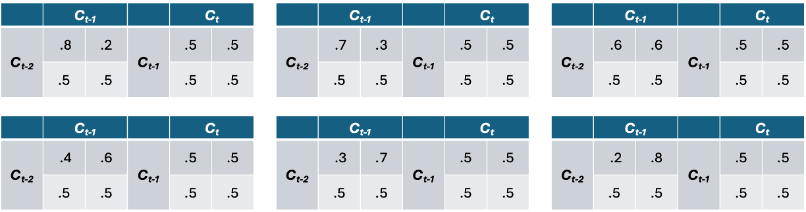
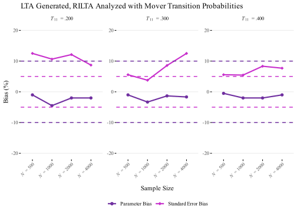
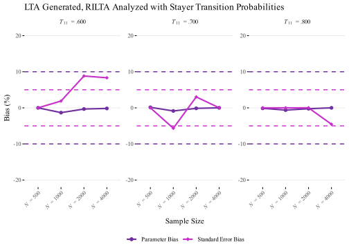

library(tidyverse)
library(MplusAutomation)
library(here)
library(gt)
library(janitor)
library(glue)
library(ggtext)
library(rlang)
library(knitr)
library(kableExtra)
library(parallel)
library(tools)Understanding the Performance of Random Intercepts Latent Transition Analysis (RI-LTA): A Monte Carlo Simulation Study using MplusAutomation
Study 1.6: LTA Generated, RILTA Analyzed with Three Timepoints

Introduction
Study 1.6: LTA Generated, RILTA Analyzed
Load Packages
Simulation
Part 1: Conduct Simulation
In this section, I am conducting a simulation where I am generating data as Latent Transition Analysis and analyzing it as Random Intercepts Latent Transition Analysis to fully explore the model’s performance. The simulation consists of 24 conditions, combining four sample sizes (N = 500, 1000, 2000, 4000) with six transition probabilities linked to logits (betas; 1.385, .85, .41, -.41, -.85, -1.385), corresponding to probabilities of .8, .7, .6, .4, .3, and .2. These conditions are iterated over programmatically using MplusAutomation to set up and execute the models. To speed up the process, I employ parallel processing, which distributes computations across multiple CPU cores, enabling efficient completion of the simulations across all scenarios.
Conditions:
Sample Size: N = 500, 1000, 2000, 4000
Transition logit (Probability): TPs = 1.385 (.8), .85 (.7), .41 (.6), -.41 (.4), -.85 (.3), -1.385 (.2)

p1 <- expand.grid(N = c(500, 1000, 2000, 4000),
TPs = c(1.385, 0.85, 0.41, -0.41, -0.85, -1.385))
# Display the matrix using gt
p1 %>%
gt() %>%
tab_header(
title = "Simulation Conditions Matrix",
subtitle = "Combinations of Sample Sizes, Transition Probabilities, and Mixtures"
) %>%
cols_align(
align = "center",
columns = everything() # Centers all columns
)| Simulation Conditions Matrix | |
|---|---|
| Combinations of Sample Sizes, Transition Probabilities, and Mixtures | |
| N | TPs |
| 500 | 1.385 |
| 1000 | 1.385 |
| 2000 | 1.385 |
| 4000 | 1.385 |
| 500 | 0.850 |
| 1000 | 0.850 |
| 2000 | 0.850 |
| 4000 | 0.850 |
| 500 | 0.410 |
| 1000 | 0.410 |
| 2000 | 0.410 |
| 4000 | 0.410 |
| 500 | -0.410 |
| 1000 | -0.410 |
| 2000 | -0.410 |
| 4000 | -0.410 |
| 500 | -0.850 |
| 1000 | -0.850 |
| 2000 | -0.850 |
| 4000 | -0.850 |
| 500 | -1.385 |
| 1000 | -1.385 |
| 2000 | -1.385 |
| 4000 | -1.385 |
Run Initial Simulation
Code
library(parallel)
# Step 1: Create the cluster for parallel processing
num_cores <- detectCores() - 1 # Detect the number of available cores (minus 1)
cl <- makeCluster(num_cores, type = "PSOCK") # Create the PSOCK cluster
lta_rilta_func <- function(N, TPs) {
LTA_RILTA <- mplusObject(
TITLE = glue("Generate LTA_RILTA_N = {N}_TP = {TPs}_1"),
MONTECARLO =
glue("NAMES = u11-u15 u21-u25 u31-u35;
GENERATE = u11-u15 u21-u25 u31-u35(1);
CATEGORICAL = u11-u15 u21-u25 u31-u35;
GENCLASSES = c1(2) c2(2) c3(2);
CLASSES = c1(2) c2(2) c3(2);
NOBSERVATIONS = {N};
SEED = 07252005;
NREPS = 500;
!!SAVE = repM1*.dat;
RESULTS = LTA_RILTA_N_{N}_TP_{TPs}_TH_1.csv;"),
ANALYSIS =
"TYPE = MIXTURE;
algorithm = integration;
processors = 24;
starts=50 10;
logcriterion=0.00001;
mconv=0.00001;",
MODELPOPULATION = glue("
%OVERALL%
[c1#1-c3#1*0];
c2#1 on c1#1*{TPs};
c3#1 on c2#1*0;
MODEL POPULATION-c1:
%c1#1%
[u11$1*1 u12$1*1 u13$1*1 u14$1*1 u15$1*1] (p111-p115);
%c1#2%
[u11$1*-1 u12$1*-1 u13$1*-1 u14$1*-1 u15$1*-1] (p121-p125);
MODEL POPULATION-c2:
%c2#1%
[u21$1*1 u22$1*1 u23$1*1 u24$1*1 u25$1*1] (p111-p115);
%c2#2%
[u21$1*-1 u22$1*-1 u23$1*-1 u24$1*-1 u25$1*-1] (p121-p125);
MODEL POPULATION-c3:
%c3#1%
[u31$1*1 u32$1*1 u33$1*1 u34$1*1 u35$1*1] (p111-p115);
%c3#2%
[u31$1*-1 u32$1*-1 u33$1*-1 u34$1*-1 u35$1*-1] (p121-p125);
"),
MODEL =
glue("
%OVERALL%
[c1#1-c3#1*0](par1-par3);
c2#1 on c1#1*{TPs} (par11);
c3#1 on c2#1*0;
f by u11* u12-u15 (p1-p5)
u21-u25 (p1-p5)
u31-u35 (p1-p5);
f@1;
[f@0];
MODEL c1:
%c1#1%
[u11$1*1 u12$1*1 u13$1*1 u14$1*1 u15$1*1] (p111-p115);
%c1#2%
[u11$1*-1 u12$1*-1 u13$1*-1 u14$1*-1 u15$1*-1] (p121-p125);
MODEL c2:
%c2#1%
[u21$1*1 u22$1*1 u23$1*1 u24$1*1 u25$1*1] (p111-p115);
%c2#2%
[u21$1*-1 u22$1*-1 u23$1*-1 u24$1*-1 u25$1*-1] (p121-p125);
MODEL c3:
%c3#1%
[u31$1*1 u32$1*1 u33$1*1 u34$1*1 u35$1*1] (p111-p115);
%c3#2%
[u31$1*-1 u32$1*-1 u33$1*-1 u34$1*-1 u35$1*-1] (p121-p125);
"),
MODELCONSTRAINT =
if (TPs == 1.385) {
glue("
New(
trans11*.80 trans12*.20 trans21*.5 trans22*.5
prob11*.5 prob12*.5 prob21*.65 prob22*.35);
trans11 = 1/(1+exp(-(par2+par11)));
trans12 = 1-trans11;
trans21 = 1/(1+exp(-par2));
trans22 = 1- trans21;
!marginal probabilities at T1 and T2:
prob11 = 1/(1+exp(-par1));
prob12 = 1 - prob11;
prob21 = prob11*trans11+prob12*trans21;
prob22 = 1- prob21;
")
}
else if (TPs == .85) {
glue("
New(
trans11*.70 trans12*.30 trans21*.5 trans22*.5
prob11*.5 prob12*.5 prob21*.60 prob22*.4);
trans11 = 1/(1+exp(-(par2+par11)));
trans12 = 1-trans11;
trans21 = 1/(1+exp(-par2));
trans22 = 1- trans21;
!marginal probabilities at T1 and T2:
prob11 = 1/(1+exp(-par1));
prob12 = 1 - prob11;
prob21 = prob11*trans11+prob12*trans21;
prob22 = 1- prob21;
")
}
else if (TPs == .41) {
glue("
New(
trans11*.60 trans12*.40 trans21*.5 trans22*.5
prob11*.5 prob12*.5 prob21*.55 prob22*.45);
trans11 = 1/(1+exp(-(par2+par11)));
trans12 = 1-trans11;
trans21 = 1/(1+exp(-par2));
trans22 = 1- trans21;
!marginal probabilities at T1 and T2:
prob11 = 1/(1+exp(-par1));
prob12 = 1 - prob11;
prob21 = prob11*trans11+prob12*trans21;
prob22 = 1- prob21;
")
}
else if (TPs == -.41) {
glue("
New(
trans11*.40 trans12*.60 trans21*.5 trans22*.5
prob11*.5 prob12*.5 prob21*.45 prob22*.55);
trans11 = 1/(1+exp(-(par2+par11)));
trans12 = 1-trans11;
trans21 = 1/(1+exp(-par2));
trans22 = 1- trans21;
!marginal probabilities at T1 and T2:
prob11 = 1/(1+exp(-par1));
prob12 = 1 - prob11;
prob21 = prob11*trans11+prob12*trans21;
prob22 = 1- prob21;
")
}
else if (TPs == -.85) {
glue("
New(
trans11*.30 trans12*.70 trans21*.5 trans22*.5
prob11*.5 prob12*.5 prob21*.40 prob22*.60);
trans11 = 1/(1+exp(-(par2+par11)));
trans12 = 1-trans11;
trans21 = 1/(1+exp(-par2));
trans22 = 1- trans21;
!marginal probabilities at T1 and T2:
prob11 = 1/(1+exp(-par1));
prob12 = 1 - prob11;
prob21 = prob11*trans11+prob12*trans21;
prob22 = 1- prob21;
")
}
else if (TPs == -1.385) {
glue("
New(
trans11*.20 trans12*.80 trans21*.5 trans22*.5
prob11*.5 prob12*.5 prob21*.35 prob22*.65);
trans11 = 1/(1+exp(-(par2+par11)));
trans12 = 1-trans11;
trans21 = 1/(1+exp(-par2));
trans22 = 1- trans21;
!marginal probabilities at T1 and T2:
prob11 = 1/(1+exp(-par1));
prob12 = 1 - prob11;
prob21 = prob11*trans11+prob12*trans21;
prob22 = 1- prob21;")
}
)
# Run Mplus model
LTA_RILTA_Model<- mplusModeler(LTA_RILTA,
dataout = here('Simulations', 'STUDY_1', '3 Time Points', '6_3T_LTA_GEN_RILTA_ANALYZED', glue("LTA_RILTA_N_{N}_TP_{TPs}_TH_1.dat")),
modelout = glue(here('Simulations', 'STUDY_1', '3 Time Points', '6_3T_LTA_GEN_RILTA_ANALYZED', "LTA_RILTA_N_{N}_TP_{TPs}_TH_1.inp")),
check = TRUE, run = TRUE, hashfilename = FALSE)
return(LTA_RILTA_Model)
}
# Step 3: Export necessary objects to the cluster
clusterExport(cl, c("lta_rilta_func", "p1", "here", "glue", "mplusModeler", "mplusObject"))
# Ensure necessary libraries are loaded on each cluster node
clusterEvalQ(cl, {
library(MplusAutomation)
library(glue)
library(here)
})
# Step 4: Run the simulation in parallel using the cluster
result_list <- parLapply(cl, 1:nrow(p1), function(i) {
lta_rilta_func(p1$N[i], p1$TPs[i])
})
# Step 5: Stop the cluster after the simulation
stopCluster(cl)Data Processing and Verification
Check for Label Switching and Errors
In this section: .csv files are first merged into a single data frame, from which specific parameters are extracted. Logit values are then converted to probabilities, and known class values are incorporated into the data frame. A subset of cases involving label switching is selected randomly and plotted for visual review. Output files are scanned for errors, which are subsequently merged back into the original data file. Additional columns derived from the file name are added, and the percentage of violations is calculated. Both errors and label switching violations are visually represented, and the total number of corrected replications is reported.
Scrape Mplus CSV Files
First, Load all CSV files and combine them into a single data frame.
# Step 1: Set the correct CSV directory
csv_directory <- here('Simulations', 'STUDY_1', '3 Time Points', '6_3T_LTA_GEN_RILTA_ANALYZED')
# Step 2: Source the child document
source(here('Child_Docs', 'data_scraping.R'))
# Will populate combined_data dataframe in the global environmentSlice Data / Extract Parameters
Extract data from the appropriate rows from each 9-row chunk and prepare the data for further processing.
# Step 2: Process the data using the child script
source(here('Child_Docs', 'step2_3t_RILTA.R'))
# Will populate final_combined_data dataframe in global environmentWrangle Data
Convert the logits to probabilities and add the known actual values to each row.
# Step 3 and 4: Process the data and return results
source(here('Child_Docs', 'step_3.R'))
# The objects `final_data_with_actuals` and `violators` should now be in the global environmentGenerate Plots of Label Switching
Generate plots of randomly sampled violators for visual inspection using parallel processing.
Code
# Set plot width and height
plot_width <- 8
plot_height <- 6
# Take a random sample of up to 250 violators (ensure not to exceed the total number of violators)
set.seed(123) # For reproducibility
sample_size <- min(nrow(violators), 250) # Handle cases where fewer than 250 violators exist
sampled_violators <- violators[sample(nrow(violators), sample_size), ]
# Define the function to create plots sequentially
plot_violator <- function(i) {
row_data <- sampled_violators[i, ]
# Extract the file name from the current row
file_name <- row_data$FileName
# Extract probability values for EC1 and EC2 (estimated probabilities) and AC1 and AC2 (actuals)
estimated_probabilities <- c(
as.numeric(row_data[c("Ec1u1", "Ec1u2", "Ec1u3", "Ec1u4", "Ec1u5")]),
as.numeric(row_data[c("Ec2u1", "Ec2u2", "Ec2u3", "Ec2u4", "Ec2u5")])
)
actual_values <- c(
as.numeric(row_data[c("Ac1u1", "Ac1u2", "Ac1u3", "Ac1u4", "Ac1u5")]),
as.numeric(row_data[c("Ac2u1", "Ac2u2", "Ac2u3", "Ac2u4", "Ac2u5")])
)
# Create labels for the legend with actual values directly from the dataset
labels <- c(
paste0("EC1: (", round(row_data$Ec1u1, 3), ", ", round(row_data$Ec1u2, 3), ", ", round(row_data$Ec1u3, 3), ", ", round(row_data$Ec1u4, 3), ", ", round(row_data$Ec1u5, 3), ")"),
paste0("EC2: (", round(row_data$Ec2u1, 3), ", ", round(row_data$Ec2u2, 3), ", ", round(row_data$Ec2u3, 3), ", ", round(row_data$Ec2u4, 3), ", ", round(row_data$Ec2u5, 3), ")"),
paste0("AC1: (", round(row_data$Ac1u1, 3), ", ", round(row_data$Ac1u2, 3), ", ", round(row_data$Ac1u3, 3), ", ", round(row_data$Ac1u4, 3), ", ", round(row_data$Ac1u5, 3), ")"),
paste0("AC2: (", round(row_data$Ac2u1, 3), ", ", round(row_data$Ac2u2, 3), ", ", round(row_data$Ac2u3, 3), ", ", round(row_data$Ac2u4, 3), ", ", round(row_data$Ac2u5, 3), ")")
)
# Step 6: Create a data frame for plotting
plot_data <- data.frame(
Items = rep(1:5, 4),
Probabilities = c(estimated_probabilities, actual_values),
Class = rep(labels, each = 5)
)
# Step 7: Create the plot with the file name in the title
p <- ggplot(plot_data, aes(x = Items, y = Probabilities, color = Class, group = Class)) +
geom_line(size = 1.2) +
geom_point(size = 3) +
labs(title = file_name, x = "Items", y = "Probabilities") + # Only the file name in the title
theme_minimal(base_size = 16) +
theme(panel.background = element_rect(fill = "white"),
plot.background = element_rect(fill = "white"),
plot.title = element_text(size = 14, hjust = 0.5)) + # Adjust title size and center
scale_color_manual(values = c(
"darkblue", "darkgreen", # EC1 and EC2 (Estimated Probabilities)
"lightblue", "lightgreen" # AC1 and AC2 (Actual Values)
))
ggsave(filename = file.path("3 Time Points", "zVIOLATOR_PLOTS","z3t_lta_rilta_violator_plots", paste0("violator_plot_", i, "_", file_name, ".png")),
plot = p, width = plot_width, height = plot_height)
}
# Apply the function to generate plots sequentially (without parallelization)
invisible(lapply(1:sample_size, plot_violator))Error Handling
Scrape for Errors
Scrape output files for errors
# Step 1: Set the correct output directory for .out files
output_folder <- here('Simulations', 'STUDY_1', '3 Time Points', '6_3T_LTA_GEN_RILTA_ANALYZED')
# Step 2: Source the child document that processes .out files
source(here('Child_Docs', 'out_scraping.R'))Tabulate Error Rates
Create Visual Summary of Errors per Condition
replication_summary_table <- replication_summary %>%
gt() %>%
tab_header(
title = "Replication Summary",
subtitle = paste0("Folder: ", output_folder)
) %>%
fmt_number(
columns = c("ErrorRate"), # Use the actual column name, ensure it matches your dataframe
decimals = 2
) %>%
cols_label(
FileName = "File Name",
CompletedReplications = "Completed Replications",
RequestedReplications = "Requested Replications",
ErrorReplications = "Replications with Errors",
GoodReplications = "Good Replications",
ErrorRate = "Error Rate (%)"
) %>%
cols_align(
align = "center",
columns = everything() # This aligns all columns' text to center
) %>%
tab_options(
table.font.size = "small",
heading.title.font.size = "medium",
heading.subtitle.font.size = "small",
table.width = pct(80) # Adjust this percentage to reduce the width of the table
)
# Display the table
replication_summary_table| Replication Summary | |||||
|---|---|---|---|---|---|
| Folder: /Users/brucecarter/Library/CloudStorage/Box-Box/RILTAS/RILTA_SIMULATION_STUDY/Simulations/STUDY_1/3 Time Points/6_3T_LTA_GEN_RILTA_ANALYZED | |||||
| File Name | Requested Replications | Completed Replications | Replications with Errors | Good Replications | Error Rate (%) |
| lta_rilta_n_1000_tp_-0.41_th_1_wd | 500 | 500 | 0 | 500 | 0.00 |
| lta_rilta_n_1000_tp_-0.85_th_1_wd | 500 | 500 | 0 | 500 | 0.00 |
| lta_rilta_n_1000_tp_-1.385_th_1_wd | 500 | 500 | 0 | 500 | 0.00 |
| lta_rilta_n_1000_tp_0.41_th_1_wd | 500 | 500 | 0 | 500 | 0.00 |
| lta_rilta_n_1000_tp_0.85_th_1_wd | 500 | 500 | 0 | 500 | 0.00 |
| lta_rilta_n_1000_tp_1.385_th_1_wd | 500 | 500 | 0 | 500 | 0.00 |
| lta_rilta_n_2000_tp_-0.41_th_1_wd | 500 | 500 | 0 | 500 | 0.00 |
| lta_rilta_n_2000_tp_-0.85_th_1_wd | 500 | 500 | 0 | 500 | 0.00 |
| lta_rilta_n_2000_tp_-1.385_th_1_wd | 500 | 500 | 0 | 500 | 0.00 |
| lta_rilta_n_2000_tp_0.41_th_1_wd | 500 | 500 | 0 | 500 | 0.00 |
| lta_rilta_n_2000_tp_0.85_th_1_wd | 500 | 500 | 0 | 500 | 0.00 |
| lta_rilta_n_2000_tp_1.385_th_1_wd | 500 | 500 | 0 | 500 | 0.00 |
| lta_rilta_n_4000_tp_-0.41_th_1_wd | 500 | 500 | 0 | 500 | 0.00 |
| lta_rilta_n_4000_tp_-0.85_th_1_wd | 500 | 500 | 0 | 500 | 0.00 |
| lta_rilta_n_4000_tp_-1.385_th_1_wd | 500 | 500 | 0 | 500 | 0.00 |
| lta_rilta_n_4000_tp_0.41_th_1_wd | 500 | 500 | 0 | 500 | 0.00 |
| lta_rilta_n_4000_tp_0.85_th_1_wd | 500 | 500 | 0 | 500 | 0.00 |
| lta_rilta_n_4000_tp_1.385_th_1_wd | 500 | 500 | 0 | 500 | 0.00 |
| lta_rilta_n_500_tp_-0.41_th_1_wd | 500 | 500 | 0 | 500 | 0.00 |
| lta_rilta_n_500_tp_-0.85_th_1_wd | 500 | 500 | 0 | 500 | 0.00 |
| lta_rilta_n_500_tp_-1.385_th_1_wd | 500 | 500 | 0 | 500 | 0.00 |
| lta_rilta_n_500_tp_0.41_th_1_wd | 500 | 500 | 0 | 500 | 0.00 |
| lta_rilta_n_500_tp_0.85_th_1_wd | 500 | 500 | 0 | 500 | 0.00 |
| lta_rilta_n_500_tp_1.385_th_1_wd | 500 | 500 | 0 | 500 | 0.00 |
#Compare rows in both .csv and .out data frames
cat("Rows in final_data_with_actuals:", nrow(final_data_with_actuals), "\n")Rows in final_data_with_actuals: 12000 # Output the final number of rows to confirm data handling
cat("Number of rows in error_summary: ", nrow(error_summary), "\n")Number of rows in error_summary: 12000 cat("Number of rows in replication_summary: ", nrow(replication_summary), "\n")Number of rows in replication_summary: 24 Merge Errors with Main Data File
Merge Errors with Main Data
# Step 2: Process the data using the child script
source(here('Child_Docs', 'merge_errors.R'))Scrape File Name Components
Create Column Names from the File Name
# Add new columns based on the information in the FileName and set factors
final_data_with_actuals <- final_data_with_actuals %>%
mutate(
# Extract the sample size (N) from the FileName with the correct values
N = case_when(
grepl("n_4000", FileName) ~ 4, # Correct value for N_4000
grepl("n_500", FileName) ~ 1,
grepl("n_1000", FileName) ~ 2,
grepl("n_2000", FileName) ~ 3,
TRUE ~ NA_integer_
),
# Map the TPs from the FileName to the appropriate Population labels
Population = case_when(
grepl("tp_1.385", FileName) ~ ".800",
grepl("tp_0.85", FileName) ~ ".700",
grepl("tp_0.41", FileName) ~ ".600",
grepl("tp_-0.41", FileName) ~ ".400",
grepl("tp_-0.85", FileName) ~ ".300",
grepl("tp_-1.385", FileName) ~ ".200",
TRUE ~ NA_character_
),
# Create the Transitions variable based on Population values
Transitions = case_when(
Population %in% c(".200", ".300", ".400") ~ 1, # Assign 1
Population %in% c(".600", ".700", ".800") ~ 2, # Assign 2
TRUE ~ NA_integer_
)
) %>%
# Convert columns to factors, ordering N_4000 first in the factor levels
mutate(
N = factor(N, levels = c(4, 1, 2, 3), labels = c("N = 4000", "N = 500", "N = 1000", "N = 2000")),
Population = factor(Population, levels = c(".800", ".700", ".600", ".400", ".300", ".200")),
Transitions = factor(Transitions, levels = c(1, 2), labels = c("Mover", "Stayer"))
)Calculate Violations
Calculate Violation Percentages per Condition
# 1. Summarize violations per condition
violation_summary <- final_data_with_actuals %>%
mutate(
Any_Violation = ifelse(is.na(Any_Violation), 0, Any_Violation),
ErrorFlag = ifelse(is.na(ErrorFlag), 0, ErrorFlag) # Ensure no missing values for ErrorFlag
) %>%
group_by(FileName, Population, N) %>%
summarize(
Total_Rows = n(), # Total runs
Total_Violations = sum(Any_Violation, na.rm = TRUE), # Total violations
Total_Errors = sum(ErrorFlag, na.rm = TRUE), # Total errors from ErrorFlag
Percentage_Violations = (Total_Violations / Total_Rows) * 100, # % violations
.groups = "drop"
) %>%
# 2. Calculate Replications Needed for label switching
mutate(
N_numeric = as.numeric(gsub("N = ", "", as.character(N))),
Additional_Runs = (500 + Total_Violations) * (Percentage_Violations / 100),
Replications_Needed = ceiling(500 + Total_Violations + Additional_Runs + 20),
Replications_Needed = if_else(Replications_Needed < 500, 500, Replications_Needed),
ErrorRate = Total_Errors / Total_Rows, # Calculate ErrorRate directly
Adjusted_Replications_Needed = ceiling(Replications_Needed / (1 - ErrorRate)),
Adjusted_Replications_Needed = if_else(Adjusted_Replications_Needed < 500, 500, Adjusted_Replications_Needed)
) %>%
select(
FileName, Population, N, N_numeric,
Total_Rows, Total_Violations, Total_Errors, ErrorRate,
Percentage_Violations, Replications_Needed, Adjusted_Replications_Needed
)Summarize & Visualize Label Switching Percentage Results
# Ensure correct column names and assign TPs (logits) based on Population (for display and MplusAutomation)
violation_summary <- violation_summary %>%
mutate(
TPs = case_when(
Population == ".800" ~ 1.385,
Population == ".700" ~ 0.85,
Population == ".600" ~ 0.41,
Population == ".400" ~ -0.41,
Population == ".300" ~ -0.85,
Population == ".200" ~ -1.385,
TRUE ~ NA_real_
)
)
# Now, create the table with formatted output
create_model_table <- function(data, model) {
data %>%
select(
`Transition Probability` = Population, # Show transition probabilities
TPs, # Logit values for MplusAutomation
N,
N_numeric, # Consistent naming for MplusAutomation
`Total Mplus Runs` = Total_Rows, # Total number of Mplus runs
`Total Violations` = Total_Violations, # Show total violations
`% of Violations` = Percentage_Violations, # Violation percentage
`Total Errors` = Total_Errors, #Total Errors#
ErrorRate, # Include the error rate
`Replications Needed` = Replications_Needed, # Include the calculated replications needed
`Adjusted Replications Needed` = Adjusted_Replications_Needed # Include the adjusted replications needed
) %>%
gt() %>%
tab_header(
title = "Monte Carlo Results:",
subtitle = "Percentage of Cases with Label Switching and Replications Needed"
) %>%
cols_align(
align = "center", # Center all columns
columns = everything()
) %>%
tab_options(
data_row.padding = px(4) # Set padding between rows
) %>%
tab_style(
style = cell_text(align = "center"), # Center align the headers only
locations = cells_column_labels(everything()) # Apply to headers only
)
}
# Create and display the table
final_table <- create_model_table(violation_summary)
# Display the final table
final_table| Monte Carlo Results: | ||||||||||
|---|---|---|---|---|---|---|---|---|---|---|
| Percentage of Cases with Label Switching and Replications Needed | ||||||||||
| Transition Probability | TPs | N | N_numeric | Total Mplus Runs | Total Violations | % of Violations | Total Errors | ErrorRate | Replications Needed | Adjusted Replications Needed |
| .400 | -0.410 | N = 1000 | 1000 | 500 | 180 | 36.0 | 0 | 0 | 945 | 945 |
| .300 | -0.850 | N = 1000 | 1000 | 500 | 185 | 37.0 | 0 | 0 | 959 | 959 |
| .200 | -1.385 | N = 1000 | 1000 | 500 | 196 | 39.2 | 0 | 0 | 989 | 989 |
| .600 | 0.410 | N = 1000 | 1000 | 500 | 192 | 38.4 | 0 | 0 | 978 | 978 |
| .700 | 0.850 | N = 1000 | 1000 | 500 | 181 | 36.2 | 0 | 0 | 948 | 948 |
| .800 | 1.385 | N = 1000 | 1000 | 500 | 195 | 39.0 | 0 | 0 | 987 | 987 |
| .400 | -0.410 | N = 2000 | 2000 | 500 | 191 | 38.2 | 0 | 0 | 975 | 975 |
| .300 | -0.850 | N = 2000 | 2000 | 500 | 186 | 37.2 | 0 | 0 | 962 | 962 |
| .200 | -1.385 | N = 2000 | 2000 | 500 | 160 | 32.0 | 0 | 0 | 892 | 892 |
| .600 | 0.410 | N = 2000 | 2000 | 500 | 190 | 38.0 | 0 | 0 | 973 | 973 |
| .700 | 0.850 | N = 2000 | 2000 | 500 | 197 | 39.4 | 0 | 0 | 992 | 992 |
| .800 | 1.385 | N = 2000 | 2000 | 500 | 205 | 41.0 | 0 | 0 | 1015 | 1015 |
| .400 | -0.410 | N = 4000 | 4000 | 500 | 191 | 38.2 | 0 | 0 | 975 | 975 |
| .300 | -0.850 | N = 4000 | 4000 | 500 | 200 | 40.0 | 0 | 0 | 1000 | 1000 |
| .200 | -1.385 | N = 4000 | 4000 | 500 | 196 | 39.2 | 0 | 0 | 989 | 989 |
| .600 | 0.410 | N = 4000 | 4000 | 500 | 191 | 38.2 | 0 | 0 | 975 | 975 |
| .700 | 0.850 | N = 4000 | 4000 | 500 | 185 | 37.0 | 0 | 0 | 959 | 959 |
| .800 | 1.385 | N = 4000 | 4000 | 500 | 174 | 34.8 | 0 | 0 | 929 | 929 |
| .400 | -0.410 | N = 500 | 500 | 500 | 198 | 39.6 | 0 | 0 | 995 | 995 |
| .300 | -0.850 | N = 500 | 500 | 500 | 173 | 34.6 | 0 | 0 | 926 | 926 |
| .200 | -1.385 | N = 500 | 500 | 500 | 163 | 32.6 | 0 | 0 | 900 | 900 |
| .600 | 0.410 | N = 500 | 500 | 500 | 163 | 32.6 | 0 | 0 | 900 | 900 |
| .700 | 0.850 | N = 500 | 500 | 500 | 181 | 36.2 | 0 | 0 | 948 | 948 |
| .800 | 1.385 | N = 500 | 500 | 500 | 175 | 35.0 | 0 | 0 | 932 | 932 |
Re-Run Simulation
Re-Run Simulation with Dynamic Replication Conditions
Code
# Define the Mplus object with the dynamic replications
lta_rilta_func <- function(N_numeric, TPs, Replications_Needed) {
LTA_RILTA <- mplusObject(
TITLE = glue("Generate LTA_RILTA_N_{N_numeric}_TP_{TPs}_TH_1"),
MONTECARLO =
glue("NAMES = u11-u15 u21-u25 u31-u35;
GENERATE = u11-u15 u21-u25 u31-u35(1);
CATEGORICAL = u11-u15 u21-u25 u31-u35;
GENCLASSES = c1(2) c2(2) c3(2);
CLASSES = c1(2) c2(2) c3(2);
NOBSERVATIONS = {N_numeric};
SEED = 07252005;
NREPS = {Replications_Needed};
!!SAVE = repM1*.dat;
RESULTS = LTA_RILTA_N_{N_numeric}_TP_{TPs}_TH_1.csv;"),
ANALYSIS =
"TYPE = MIXTURE;
algorithm = integration;
processors = 24;
starts=50 10;
logcriterion=0.00001;
mconv=0.00001;",
MODELPOPULATION = glue("
%OVERALL%
[c1#1-c3#1*0];
c2#1 on c1#1*{TPs};
c3#1 on c2#1*0;
MODEL POPULATION-c1:
%c1#1%
[u11$1*1 u12$1*1 u13$1*1 u14$1*1 u15$1*1] (p111-p115);
%c1#2%
[u11$1*-1 u12$1*-1 u13$1*-1 u14$1*-1 u15$1*-1] (p121-p125);
MODEL POPULATION-c2:
%c2#1%
[u21$1*1 u22$1*1 u23$1*1 u24$1*1 u25$1*1] (p111-p115);
%c2#2%
[u21$1*-1 u22$1*-1 u23$1*-1 u24$1*-1 u25$1*-1] (p121-p125);
MODEL POPULATION-c3:
%c3#1%
[u31$1*1 u32$1*1 u33$1*1 u34$1*1 u35$1*1] (p111-p115);
%c3#2%
[u31$1*-1 u32$1*-1 u33$1*-1 u34$1*-1 u35$1*-1] (p121-p125);
"),
MODEL =
glue("
%OVERALL%
[c1#1-c3#1*0](par1-par3);
c2#1 on c1#1*{TPs} (par11);
c3#1 on c2#1*0;
f by u11* u12-u15 (p1-p5)
u21-u25 (p1-p5)
u31-u35 (p1-p5);
f@1;
[f@0];
MODEL c1:
%c1#1%
[u11$1*1 u12$1*1 u13$1*1 u14$1*1 u15$1*1] (p111-p115);
%c1#2%
[u11$1*-1 u12$1*-1 u13$1*-1 u14$1*-1 u15$1*-1] (p121-p125);
MODEL c2:
%c2#1%
[u21$1*1 u22$1*1 u23$1*1 u24$1*1 u25$1*1] (p111-p115);
%c2#2%
[u21$1*-1 u22$1*-1 u23$1*-1 u24$1*-1 u25$1*-1] (p121-p125);
MODEL c3:
%c3#1%
[u31$1*1 u32$1*1 u33$1*1 u34$1*1 u35$1*1] (p111-p115);
%c3#2%
[u31$1*-1 u32$1*-1 u33$1*-1 u34$1*-1 u35$1*-1] (p121-p125);
"),
MODELCONSTRAINT =
if (TPs == 1.385) {
glue("
New(
trans11*.80 trans12*.20 trans21*.5 trans22*.5
prob11*.5 prob12*.5 prob21*.65 prob22*.35);
trans11 = 1/(1+exp(-(par2+par11)));
trans12 = 1-trans11;
trans21 = 1/(1+exp(-par2));
trans22 = 1- trans21;
!marginal probabilities at T1 and T2:
prob11 = 1/(1+exp(-par1));
prob12 = 1 - prob11;
prob21 = prob11*trans11+prob12*trans21;
prob22 = 1- prob21;
")
}
else if (TPs == .85) {
glue("
New(
trans11*.70 trans12*.30 trans21*.5 trans22*.5
prob11*.5 prob12*.5 prob21*.60 prob22*.4);
trans11 = 1/(1+exp(-(par2+par11)));
trans12 = 1-trans11;
trans21 = 1/(1+exp(-par2));
trans22 = 1- trans21;
!marginal probabilities at T1 and T2:
prob11 = 1/(1+exp(-par1));
prob12 = 1 - prob11;
prob21 = prob11*trans11+prob12*trans21;
prob22 = 1- prob21;
")
}
else if (TPs == .41) {
glue("
New(
trans11*.60 trans12*.40 trans21*.5 trans22*.5
prob11*.5 prob12*.5 prob21*.55 prob22*.45);
trans11 = 1/(1+exp(-(par2+par11)));
trans12 = 1-trans11;
trans21 = 1/(1+exp(-par2));
trans22 = 1- trans21;
!marginal probabilities at T1 and T2:
prob11 = 1/(1+exp(-par1));
prob12 = 1 - prob11;
prob21 = prob11*trans11+prob12*trans21;
prob22 = 1- prob21;
")
}
else if (TPs == -.41) {
glue("
New(
trans11*.40 trans12*.60 trans21*.5 trans22*.5
prob11*.5 prob12*.5 prob21*.45 prob22*.55);
trans11 = 1/(1+exp(-(par2+par11)));
trans12 = 1-trans11;
trans21 = 1/(1+exp(-par2));
trans22 = 1- trans21;
!marginal probabilities at T1 and T2:
prob11 = 1/(1+exp(-par1));
prob12 = 1 - prob11;
prob21 = prob11*trans11+prob12*trans21;
prob22 = 1- prob21;
")
}
else if (TPs == -.85) {
glue("
New(
trans11*.30 trans12*.70 trans21*.5 trans22*.5
prob11*.5 prob12*.5 prob21*.40 prob22*.60);
trans11 = 1/(1+exp(-(par2+par11)));
trans12 = 1-trans11;
trans21 = 1/(1+exp(-par2));
trans22 = 1- trans21;
!marginal probabilities at T1 and T2:
prob11 = 1/(1+exp(-par1));
prob12 = 1 - prob11;
prob21 = prob11*trans11+prob12*trans21;
prob22 = 1- prob21;
")
}
else if (TPs == -1.385) {
glue("
New(
trans11*.20 trans12*.80 trans21*.5 trans22*.5
prob11*.5 prob12*.5 prob21*.35 prob22*.65);
trans11 = 1/(1+exp(-(par2+par11)));
trans12 = 1-trans11;
trans21 = 1/(1+exp(-par2));
trans22 = 1- trans21;
!marginal probabilities at T1 and T2:
prob11 = 1/(1+exp(-par1));
prob12 = 1 - prob11;
prob21 = prob11*trans11+prob12*trans21;
prob22 = 1- prob21;")
}
)
# Run Mplus model
LTA_RILTA_Model<- mplusModeler(LTA_RILTA,
dataout = here("6. 3T LTA GEN RILTA ANALYZED_REP", glue("LTA_RILTA_N_{N_numeric}_TP_{TPs}_TH_1.dat")),
modelout = glue(here("6. 3T LTA GEN RILTA ANALYZED_REP", "LTA_RILTA_N_{N_numeric}_TP_{TPs}_TH_1.inp")),
check = TRUE, run = TRUE, hashfilename = FALSE)
return(LTA_RILTA_Model)
}
library(parallel)
# Start the cluster
num_cores <- detectCores() - 1
# Step 2: Select the cluster type based on the system (PSOCK for Windows, FORK for macOS/Linux)
cluster_type <- ifelse(.Platform$OS.type == "windows", "PSOCK", "FORK")
cl <- makeCluster(num_cores, type = cluster_type)
# Export necessary objects to the cluster
clusterExport(cl, c("lta_rilta_func", "violation_summary", "here", "glue", "mplusModeler", "mplusObject"))
# Ensure required libraries are loaded on each node
clusterEvalQ(cl, {
library(MplusAutomation)
library(glue)
library(here)
})
result_list <- parLapply(cl, 1:nrow(violation_summary), function(i) {
lta_rilta_func(
violation_summary$N_numeric[i],
violation_summary$TPs[i],
violation_summary$Replications_Needed[i]
)
})
# Stop the cluster after the simulation
stopCluster(cl)Check for Label Switching and Errors - Part 2
In this section: we re conduct the steps for aggregating the label switching and errors to guarantee that we will have at minimum 500 replications per condition.
Load all CSV files and combine them into a single data frame.
#| label: "combine-csv-files-parallel"
#| echo: true
#| message: false
#| warning: false
#| code-fold: false
# Step 1: Set the correct CSV directory
csv_directory <- here('Simulations', 'STUDY_1', '3 Time Points', '6_3T_LTA_GEN_RILTA_ANALYZED_REP')
# Step 2: Source the child document
source(here('Child_Docs', 'data_scraping.R'))
# Will populate combine_data in global environmentExtract data from the appropriate rows from each 9-row chunk and prepare the data for further processing.
# Step 2: Process the data using the child script
source(here('Child_Docs', 'step2_3t_RILTA.R'))
# Will will populate final_combined data in global environmentConvert the logits to probabilities and add the known actual values to each row.
# Step 3 and 4: Process the data and return results
source(here('Child_Docs', 'step_3.R'))
# The objects `final_data_with_actuals` and `violators` should now be in the global environmentScrape output files for errors
# Step 1: Set the correct output directory for .out files
output_folder <- here('Simulations', 'STUDY_1', '3 Time Points', '6_3T_LTA_GEN_RILTA_ANALYZED_REP')
# Step 2: Source the child document that processes .out files
source(here('Child_Docs', 'out_scraping.R'))Create Visual Summary of Errors per Condition
replication_summary_table <- replication_summary %>%
gt() %>%
tab_header(
title = "Replication Summary",
subtitle = paste0("Folder: ", output_folder)
) %>%
fmt_number(
columns = c("ErrorRate"), # Use the actual column name, ensure it matches your dataframe
decimals = 2
) %>%
cols_label(
FileName = "File Name",
CompletedReplications = "Completed Replications",
RequestedReplications = "Requested Replications",
ErrorReplications = "Replications with Errors",
GoodReplications = "Good Replications",
ErrorRate = "Error Rate (%)"
) %>%
cols_align(
align = "center",
columns = everything() # This aligns all columns' text to center
) %>%
tab_options(
table.font.size = "small",
heading.title.font.size = "medium",
heading.subtitle.font.size = "small",
table.width = pct(80) # Adjust this percentage to reduce the width of the table
)
# Display the table
replication_summary_table| Replication Summary | |||||
|---|---|---|---|---|---|
| Folder: /Users/brucecarter/Library/CloudStorage/Box-Box/RILTAS/RILTA_SIMULATION_STUDY/Simulations/STUDY_1/3 Time Points/6_3T_LTA_GEN_RILTA_ANALYZED_REP | |||||
| File Name | Requested Replications | Completed Replications | Replications with Errors | Good Replications | Error Rate (%) |
| lta_rilta_n_1000_tp_-0.41_th_1_wd | 945 | 945 | 0 | 945 | 0.00 |
| lta_rilta_n_1000_tp_-0.85_th_1_wd | 959 | 959 | 0 | 959 | 0.00 |
| lta_rilta_n_1000_tp_-1.385_th_1_wd | 989 | 989 | 0 | 989 | 0.00 |
| lta_rilta_n_1000_tp_0.41_th_1_wd | 978 | 978 | 0 | 978 | 0.00 |
| lta_rilta_n_1000_tp_0.85_th_1_wd | 948 | 948 | 0 | 948 | 0.00 |
| lta_rilta_n_1000_tp_1.385_th_1_wd | 987 | 987 | 0 | 987 | 0.00 |
| lta_rilta_n_2000_tp_-0.41_th_1_wd | 975 | 975 | 0 | 975 | 0.00 |
| lta_rilta_n_2000_tp_-0.85_th_1_wd | 962 | 962 | 0 | 962 | 0.00 |
| lta_rilta_n_2000_tp_-1.385_th_1_wd | 892 | 892 | 0 | 892 | 0.00 |
| lta_rilta_n_2000_tp_0.41_th_1_wd | 973 | 973 | 0 | 973 | 0.00 |
| lta_rilta_n_2000_tp_0.85_th_1_wd | 992 | 992 | 0 | 992 | 0.00 |
| lta_rilta_n_2000_tp_1.385_th_1_wd | 1015 | 1015 | 0 | 1015 | 0.00 |
| lta_rilta_n_4000_tp_-0.41_th_1_wd | 975 | 975 | 0 | 975 | 0.00 |
| lta_rilta_n_4000_tp_-0.85_th_1_wd | 1000 | 1000 | 0 | 1000 | 0.00 |
| lta_rilta_n_4000_tp_-1.385_th_1_wd | 989 | 989 | 0 | 989 | 0.00 |
| lta_rilta_n_4000_tp_0.41_th_1_wd | 975 | 975 | 0 | 975 | 0.00 |
| lta_rilta_n_4000_tp_0.85_th_1_wd | 959 | 959 | 0 | 959 | 0.00 |
| lta_rilta_n_4000_tp_1.385_th_1_wd | 929 | 929 | 0 | 929 | 0.00 |
| lta_rilta_n_500_tp_-0.41_th_1_wd | 995 | 995 | 0 | 995 | 0.00 |
| lta_rilta_n_500_tp_-0.85_th_1_wd | 926 | 926 | 0 | 926 | 0.00 |
| lta_rilta_n_500_tp_-1.385_th_1_wd | 900 | 900 | 0 | 900 | 0.00 |
| lta_rilta_n_500_tp_0.41_th_1_wd | 900 | 900 | 0 | 900 | 0.00 |
| lta_rilta_n_500_tp_0.85_th_1_wd | 948 | 948 | 0 | 948 | 0.00 |
| lta_rilta_n_500_tp_1.385_th_1_wd | 932 | 932 | 0 | 932 | 0.00 |
#Compare rows in both .csv and .out data frames
cat("Rows in final_data_with_actuals:", nrow(final_data_with_actuals), "\n")Rows in final_data_with_actuals: 23043 # Output the final number of rows to confirm data handling
cat("Number of rows in error_summary: ", nrow(error_summary), "\n")Number of rows in error_summary: 23043 cat("Number of rows in replication_summary: ", nrow(replication_summary), "\n")Number of rows in replication_summary: 24 Merge Errors with Main Data
# Step 2: Process the data using the child script
source(here('Child_Docs', 'merge_errors.R'))Create Column Names from the File Name
# Add new columns based on the information in the FileName and set factors
final_data_with_actuals <- final_data_with_actuals %>%
mutate(
# Extract the sample size (N) from the FileName with the correct values
N = case_when(
grepl("n_4000", FileName) ~ 4, # Correct value for N_4000
grepl("n_500", FileName) ~ 1,
grepl("n_1000", FileName) ~ 2,
grepl("n_2000", FileName) ~ 3,
TRUE ~ NA_integer_
),
# Map the TPs from the FileName to the appropriate Population labels
Population = case_when(
grepl("tp_1.385", FileName) ~ ".800",
grepl("tp_0.85", FileName) ~ ".700",
grepl("tp_0.41", FileName) ~ ".600",
grepl("tp_-0.41", FileName) ~ ".400",
grepl("tp_-0.85", FileName) ~ ".300",
grepl("tp_-1.385", FileName) ~ ".200",
TRUE ~ NA_character_
),
# Create the Transitions variable based on Population values
Transitions = case_when(
Population %in% c(".200", ".300", ".400") ~ 1, # Assign 1 for Population .200, .300, .400
Population %in% c(".600", ".700", ".800") ~ 2, # Assign 2 for Population .600, .700, .800
TRUE ~ NA_integer_
)
) %>%
# Convert columns to factors, ordering N_4000 first in the factor levels
mutate(
N = factor(N, levels = c(4, 1, 2, 3), labels = c("N = 4000", "N = 500", "N = 1000", "N = 2000")),
Population = factor(Population, levels = c(".800", ".700", ".600", ".400", ".300", ".200")),
Transitions = factor(Transitions, levels = c(1, 2), labels = c("Mover", "Stayer"))
)Calculate Violation Percentages per Condition
#| label: "calculate-violations2"
#| echo: true
#| message: false
#| warning: false
#| code-fold: false
violation_summary <- final_data_with_actuals %>%
mutate(
Any_Violation = ifelse(is.na(Any_Violation), 0, Any_Violation),
ErrorFlag = ifelse(is.na(ErrorFlag), 0, ErrorFlag) # No missing values for ErrorFlag
) %>%
group_by(FileName, Population, N) %>%
summarize(
Total_Rows = n(), # Total runs
Total_Violations = sum(Any_Violation, na.rm = TRUE), # Sum of violations
Total_Errors = sum(ErrorFlag, na.rm = TRUE), # Sum of errors
Percentage_Violations = (Total_Violations / Total_Rows) * 100, # Percentage of violations
.groups = "drop"
) %>%
left_join(replication_summary %>% select(FileName, CompletedReplications), by = "FileName") %>%
mutate(
CompletedReplications = ifelse(is.na(CompletedReplications), 500, CompletedReplications),
N_numeric = as.numeric(gsub("N = ", "", N)),
GoodReplications = CompletedReplications - Total_Violations - Total_Errors,
GoodReplications = ifelse(GoodReplications < 0, 0, GoodReplications),
Reanalysis_Needed = if_else(GoodReplications >= 500, "No", "Yes"), # Flag for reanalysis needed
ErrorRate = Total_Errors / Total_Rows, # Calculate ErrorRate
Replications_Needed = ceiling(CompletedReplications + Total_Violations + (CompletedReplications * Percentage_Violations / 100) + 20),
Adjusted_Replications_Needed = ceiling(Replications_Needed / (1 - ErrorRate))
) %>%
select(
FileName, Population, N, N_numeric,
Total_Rows, Total_Violations, Total_Errors,
ErrorRate, Percentage_Violations, GoodReplications,
Replications_Needed, Adjusted_Replications_Needed,
Reanalysis_Needed
)Summarize & Visualize Label Switching Percentage Results
# Filter the data for rows with non-zero error rates and clean N_numeric
# Modify the TPs assignment to force formatting
violation_summary <- violation_summary %>%
mutate(
TPs = case_when(
Population == ".800" ~ formatC(1.385, format = "f", digits = 3),
Population == ".700" ~ formatC(0.85, format = "f", digits = 2),
Population == ".600" ~ formatC(0.41, format = "f", digits = 2),
Population == ".400" ~ formatC(-0.41, format = "f", digits = 2),
Population == ".300" ~ formatC(-0.85, format = "f", digits = 2),
Population == ".200" ~ formatC(-1.385, format = "f", digits = 3),
TRUE ~ NA_character_
),
N_numeric = as.numeric(gsub("N = ", "", as.character(N))) # Clean N_numeric by stripping out "N = "
)
# Summarize and visualize the final table
final_table <- violation_summary %>%
select(
`Transition Probability` = Population, # Rename column for clarity
TPs, # Logit values
N_numeric, # Cleaned sample size
`Total Mplus Runs` = Total_Rows, # Total runs
Total_Violations, # Total violations
`% of Violations` = Percentage_Violations, # Violation percentage
Total_Errors,
ErrorRate, # Error rate
Replications_Needed, # Replications needed
`Adjusted Replications Needed` = Adjusted_Replications_Needed, # Adjusted replications needed
Reanalysis_Needed
) %>%
gt() %>%
tab_header(
title = "Monte Carlo Results:",
subtitle = "Percentage of Cases with Label Switching and Replications Needed"
) %>%
cols_align(
align = "center", # Center all columns
columns = everything()
) %>%
fmt_number(
columns = c(`% of Violations`, ErrorRate),
decimals = 2 # Ensure these percentages are formatted to 2 decimal places
) %>%
tab_options(
data_row.padding = px(4) # Set padding between rows
) %>%
tab_style(
style = cell_text(align = "center"), # Center align the headers only
locations = cells_column_labels(everything()) # Apply to headers only
)
# Display the table
final_table| Monte Carlo Results: | ||||||||||
|---|---|---|---|---|---|---|---|---|---|---|
| Percentage of Cases with Label Switching and Replications Needed | ||||||||||
| Transition Probability | TPs | N_numeric | Total Mplus Runs | Total_Violations | % of Violations | Total_Errors | ErrorRate | Replications_Needed | Adjusted Replications Needed | Reanalysis_Needed |
| .400 | -0.41 | 1000 | 945 | 342 | 36.19 | 0 | 0.00 | 1649 | 1649 | No |
| .300 | -0.85 | 1000 | 959 | 340 | 35.45 | 0 | 0.00 | 1659 | 1659 | No |
| .200 | -1.385 | 1000 | 989 | 368 | 37.21 | 0 | 0.00 | 1745 | 1745 | No |
| .600 | 0.41 | 1000 | 978 | 381 | 38.96 | 0 | 0.00 | 1760 | 1760 | No |
| .700 | 0.85 | 1000 | 948 | 345 | 36.39 | 0 | 0.00 | 1658 | 1658 | No |
| .800 | 1.385 | 1000 | 987 | 374 | 37.89 | 0 | 0.00 | 1755 | 1755 | No |
| .400 | -0.41 | 2000 | 975 | 371 | 38.05 | 0 | 0.00 | 1737 | 1737 | No |
| .300 | -0.85 | 2000 | 962 | 353 | 36.69 | 0 | 0.00 | 1688 | 1688 | No |
| .200 | -1.385 | 2000 | 892 | 329 | 36.88 | 0 | 0.00 | 1570 | 1570 | No |
| .600 | 0.41 | 2000 | 973 | 358 | 36.79 | 0 | 0.00 | 1709 | 1709 | No |
| .700 | 0.85 | 2000 | 992 | 400 | 40.32 | 0 | 0.00 | 1812 | 1812 | No |
| .800 | 1.385 | 2000 | 1015 | 381 | 37.54 | 0 | 0.00 | 1797 | 1797 | No |
| .400 | -0.41 | 4000 | 975 | 363 | 37.23 | 0 | 0.00 | 1721 | 1721 | No |
| .300 | -0.85 | 4000 | 1000 | 385 | 38.50 | 0 | 0.00 | 1790 | 1790 | No |
| .200 | -1.385 | 4000 | 989 | 356 | 36.00 | 0 | 0.00 | 1721 | 1721 | No |
| .600 | 0.41 | 4000 | 975 | 364 | 37.33 | 0 | 0.00 | 1723 | 1723 | No |
| .700 | 0.85 | 4000 | 959 | 368 | 38.37 | 0 | 0.00 | 1715 | 1715 | No |
| .800 | 1.385 | 4000 | 929 | 325 | 34.98 | 0 | 0.00 | 1599 | 1599 | No |
| .400 | -0.41 | 500 | 995 | 366 | 36.78 | 0 | 0.00 | 1747 | 1747 | No |
| .300 | -0.85 | 500 | 926 | 327 | 35.31 | 0 | 0.00 | 1600 | 1600 | No |
| .200 | -1.385 | 500 | 900 | 307 | 34.11 | 0 | 0.00 | 1534 | 1534 | No |
| .600 | 0.41 | 500 | 900 | 302 | 33.56 | 0 | 0.00 | 1524 | 1524 | No |
| .700 | 0.85 | 500 | 948 | 318 | 33.54 | 0 | 0.00 | 1604 | 1604 | No |
| .800 | 1.385 | 500 | 932 | 334 | 35.84 | 0 | 0.00 | 1620 | 1620 | No |
Final Data Preparation
Filter Cases with Violations and Errors
Filter out cases with any violations, leaving only the clean data.
# Filter out cases with no violations and no errors
filtered_data_with_no_violations <- final_data_with_actuals[
final_data_with_actuals$Any_Violation == 0 & final_data_with_actuals$ErrorFlag == 0, ]Randomly Sample 500 Replications
Take random sample of replications to achieve n = 500
# Set seed for reproducibility
set.seed(07252005)
# Check initial counts to ensure each FileName group has at least 500 rows
initial_counts <- filtered_data_with_no_violations %>%
group_by(FileName) %>%
summarize(Initial_Count = n(), .groups = "drop") %>%
drop_na() # Remove any NA values quietly within the pipeline
# Identify groups with insufficient rows
insufficient_groups <- initial_counts %>% filter(Initial_Count < 500)
# Handle based on whether insufficient groups exist
if (nrow(insufficient_groups) == 0) {
# Message to indicate successful operation
cat("All FileName groups had at least 500 rows.\n")
# Proceed with sampling
sampled_data <- filtered_data_with_no_violations %>%
group_by(FileName) %>%
sample_n(size = 500, replace = FALSE) %>%
ungroup()
# Print confirmation that sampling was successful
cat("Sampling completed successfully.\n")
} else {
# Print the groups that don't meet the requirement
cat("Some FileName groups do not have at least 500 rows. Sampling not performed.\n")
cat("Groups with insufficient rows:\n")
print(insufficient_groups)
}All FileName groups had at least 500 rows.
Sampling completed successfully.Calculate Monte Carlo Values
Calculate Monte Carlo values for TRANS11, including population values, averages, standard errors, Mean Squared Error (MSE), coverage, and power
# Convert necessary columns to numeric
cleaned_data <- sampled_data %>%
mutate(
Population = as.numeric(as.character(Population)),
TRANS11 = as.numeric(as.character(TRANS11)), # Convert TRANS11 to numeric
SE_11 = as.numeric(as.character(SE_11)) # Convert SE_11 to numeric
)
# Calculate the Monte Carlo values, including Population (transition probability), N,
# number of replications, and averages for TRANS11 and SE11
mc_values <- cleaned_data %>%
group_by(FileName, Population, N, Transitions) %>%
summarize(
average = round(mean(TRANS11, na.rm = TRUE), 3),
average_SE = round(mean(SE_11, na.rm = TRUE), 3),
population_sd = round(sd(TRANS11, na.rm = TRUE), 3),
MSE = round(mean((TRANS11 - Population)^2, na.rm = TRUE), 3),
Coverage = round(mean((Population >= (TRANS11 - 1.96 * SE_11)) &
(Population <= (TRANS11 + 1.96 * SE_11)), na.rm = TRUE), 3),
Power = round(mean(TRANS11 / SE_11 > 1.96, na.rm = TRUE), 3),
Reps_Used = n()
) %>%
ungroup()Calculate Bias and Dichotomous Variables
Calculate dichotomous variables for Power and Coverage, compute Parameter and SE Bias, and prepare subsets for movers and stayers.
# Step 1: Calculate dichotomous variable for Power (1 if Power >= 0.8, else 0)
mc_values <- mc_values %>%
mutate(Power_Dic = ifelse(Power >= 0.8, 1, 0))
# Step 2: Calculate dichotomous variable for Coverage (0 if outside [0.91, 0.98], else 1)
mc_values <- mc_values %>%
mutate(Coverage_Dic = ifelse(Coverage > 0.98 | Coverage < 0.91, 0, 1))
# Step 3: Remove any groupings before further calculations
mc_values <- mc_values %>%
ungroup()
# Step 4: Ensure numeric columns are correctly formatted and **convert Population only for calculations**
mc_values <- mc_values %>%
mutate(
# Keep average as numeric but **do not convert Population for display purposes**
average = as.numeric(average),
population_numeric = as.numeric(Population), # Create a temporary numeric version of Population
average_se = as.numeric(average_SE),
population_sd = as.numeric(population_sd)
)
# Step 5: Calculate Parameter Bias and SE Bias, rounding the results to 2 decimal places
mc_values <- mc_values %>%
mutate(
# Use population_numeric for the calculations, but **retain Population in the original format**
Parameter_Bias = (average - population_numeric) / population_numeric * 100, # Bias for the parameter
SE_Bias = (average_se - population_sd) / population_sd * 100 # Bias for the standard error
) %>%
mutate(across(c(Parameter_Bias, SE_Bias), ~ round(.x, 2))) # Round to 2 decimal places
# Drop the temporary numeric population column if no longer needed
mc_values <- mc_values %>%
select(-population_numeric)Prepare Data for Visualization
Subset Data for Bias Plots
Subset the Monte Carlo data into mover transition probabilities (.2, .3, .4) and stayer transition probabilities (.6, .7, .8) based on population values
# Assuming Population is numeric in all_data
all_data <- mc_values
# Ensure that the Population_Label uses numeric levels without leading zeros but assigns expression-based labels
all_data$Population_Label <- factor(all_data$Population,
levels = c(0.2, 0.3, 0.4, 0.6, 0.7, 0.8), # Numeric levels without leading zeros
labels = c(
expression(bold(italic(T))[11] ~ " = .200"),
expression(bold(italic(T))[11] ~ " = .300"),
expression(bold(italic(T))[11] ~ " = .400"),
expression(bold(italic(T))[11] ~ " = .600"),
expression(bold(italic(T))[11] ~ " = .700"),
expression(bold(italic(T))[11] ~ " = .800")
)
)
# Subset for Transitions movers (already correctly defined as "Mover")
subset_mover <- subset(all_data, Transitions == "Mover")
# Subset for Transitions stayers (already correctly defined as "Stayer")
subset_stayer <- subset(all_data, Transitions == "Stayer")Prepare Function for Bias Plots
create_plot <- function(data, title_suffix) {
# Common theme for the plots
common_theme <- theme_minimal() +
theme(
panel.grid.major.x = element_blank(),
panel.grid.minor.x = element_blank(),
panel.grid.minor.y = element_blank(),
axis.text.x = element_text(size = 8),
axis.ticks = element_line(color = "black", linewidth = 0.5),
legend.position = "bottom",
legend.title = element_blank(),
text = element_text(family = "Times New Roman"),
axis.title.x = element_text(margin = margin(t = 10, b = 10)),
legend.margin = margin(t = -10),
plot.caption = element_text(hjust = 0, margin = margin(t = 10))
)
# Detect which legend items to show
present_categories <- c("Parameter Bias", "Standard Error Bias")
if (any(data$Coverage_Dic == 0)) present_categories <- c(present_categories, "Coverage Failure")
if (any(data$Power_Dic == 0)) present_categories <- c(present_categories, "Power Failure")
# Define colors and shapes for different categories
colors <- c("Parameter Bias" = "#7030A0", "Standard Error Bias" = "#C830CC",
"Coverage Failure" = "#7030A0", "Power Failure" = "black")
shapes <- c("Parameter Bias" = 16, "Standard Error Bias" = 18,
"Coverage Failure" = 1, "Power Failure" = 4)
# Filter colors and shapes based on detected categories
filtered_colors <- colors[present_categories]
filtered_shapes <- shapes[present_categories]
# Plotting
ggplot(data = data, aes(x = factor(N))) +
geom_line(aes(y = Parameter_Bias, color = "Parameter Bias", group = Population_Label), linewidth = 1, linetype = "solid") +
geom_line(aes(y = SE_Bias, color = "Standard Error Bias", group = Population_Label), linewidth = 1, linetype = "solid") +
geom_point(aes(y = Parameter_Bias, color = "Parameter Bias"), shape = 16, size = 2.2, fill = "#7030A0", alpha = 1) +
geom_point(aes(y = SE_Bias, color = "Standard Error Bias"), shape = 18, size = 2.2, fill = "#C830CC", alpha = 1) +
geom_point(data = subset(data, Coverage_Dic == 0), aes(y = Parameter_Bias, color = "Coverage Failure"), shape = 1, size = 2, fill = "#7030A0", alpha = 1) +
geom_point(data = subset(data, Power_Dic == 0), aes(y = Parameter_Bias, color = "Power Failure"), shape = 4, size = 2, fill = "black", alpha = 1) +
geom_line(data = subset(data, Coverage_Dic == 0), aes(y = Parameter_Bias, color = "Coverage Failure", group = Population_Label), linewidth = 0.3, linetype = "solid") +
geom_line(data = subset(data, Power_Dic == 0), aes(y = Parameter_Bias, color = "Power Failure", group = Population_Label), linewidth = 0.3, linetype = "solid") +
scale_color_manual(
values = filtered_colors,
labels = present_categories,
breaks = present_categories,
guide = guide_legend(
override.aes = list(shape = filtered_shapes)
)
) +
labs(
x = "Sample Size",
y = "Bias (%)",
color = "",
title = paste("LTA Generated, RILTA Analyzed with", title_suffix, "Transition Probabilities")
) +
coord_cartesian(ylim = c(-20, 20)) +
facet_wrap(~ as.character(Population_Label), scales = "free", labeller = label_parsed) +
scale_x_discrete(labels = c(expression(italic("N") ~ " = 500"), expression(italic("N") ~ " = 1000"), expression(italic("N") ~ " = 2000"), expression(italic("N") ~ " = 4000"))) +
scale_y_continuous(breaks = seq(-20, 20, by = 10)) +
common_theme +
geom_hline(yintercept = c(-10, 10), linetype = "dashed", color = "#7030A0", linewidth = 0.7) +
geom_hline(yintercept = c(-5, 5), linetype = "dashed", color = "#C830CC", linewidth = 0.7) +
theme(
legend.position = "bottom",
strip.placement = "outside",
strip.background = element_blank(),
panel.spacing = unit(0.5, "lines"),
axis.text.x = element_text(angle = 45, hjust = 1, size = 8)
)
}Render Bias Figures
# Create and print plot for Mover
plot_mover <- create_plot(subset_mover, "Mover")
#| column: screen
#| fig-format: svg
print(plot_mover)
# Remove title for the saved version
plot_mover_no_title <- plot_mover + labs(title = NULL)
# Save Mover plot without title as .svg
ggsave(here('Simulations', 'STUDY_1', '3 Time Points', "zFigures", "x3t_lta_rilta_plots", "plot_mover.svg"), plot = plot_mover_no_title, width = 6, height = 3, dpi = 300, device = "svg")# Create and print plot for Stayer
plot_stayer <- create_plot(subset_stayer, "Stayer")
#| column: screen
#| fig-format: svg
print(plot_stayer)
# Remove title for the saved version
plot_stayer_no_title <- plot_stayer + labs(title = NULL)
# Save Stayer plot without title as .svg
ggsave(here('Simulations', 'STUDY_1', '3 Time Points', "zFigures", "x3t_lta_rilta_plots", "plot_stayer.svg"), plot = plot_stayer_no_title, width = 6, height = 3, dpi = 300, device = "svg")Prepare Data for Heat Maps
Prepare data for heat map creation by ensuring correct formatting for population values, and subsetting the data based on class proportions and sample sizes.
Code
# Step 1: Separate the movers and stayers and ensure sorting by N and Population for each transition
movers <- all_data %>%
filter(Transitions == "Mover") %>%
arrange(as.numeric(gsub("N = ", "", N)), Population) # Sort movers by numeric N and Population
stayers <- all_data %>%
filter(Transitions == "Stayer") %>%
arrange(as.numeric(gsub("N = ", "", N)), Population) # Sort stayers by numeric N and Population
# Step 2: Assign N_Label only once for each N within Movers and Stayers
movers <- movers %>%
group_by(N) %>%
mutate(N_Label = ifelse(row_number() == 2, as.character(N), "")) %>%
ungroup()
stayers <- stayers %>%
group_by(N) %>%
mutate(N_Label = ifelse(row_number() == 2, as.character(N), "")) %>%
ungroup()
# Step 3: Combine movers and stayers back into one dataset, keeping them separate by transitions
all_data_sorted <- bind_rows(movers, stayers)
# Step 4: Select necessary columns for the final display
test_map <- select(all_data_sorted, N_Label, Population, average, Coverage, Power, Parameter_Bias, SE_Bias)Prepare Function for Heat Map Creation
#| label: "create-heatmap-function"
#| echo: true
#| message: false
#| warning: false
#| code-fold: true
# Function to create gt table based on subset data
create_gt_table <- function(subset, transition_probability) {
# Create the gt object and set initial formatting
gt_table <- subset %>%
gt() %>%
opt_table_font(stack = "geometric-humanist") %>%
tab_header(
title = paste("LTA Generated & LTA Analyzed with Transition Probability of", transition_probability)
) %>%
cols_label(
N_Label = "Sample Size",
average = "Estimated<br>Probability",
Coverage = "Coverage",
Power = "Power",
Parameter_Bias = "Parameter <br>Bias",
SE_Bias = "Standard Error<br>Bias",
.fn = md
) %>%
tab_spanner(
label = "Bias",
columns = c("Parameter_Bias", "SE_Bias")
) %>%
tab_row_group(
label = "Stayer Probabilities", # Label for the first subgroup
rows = c(13:24) # Rows corresponding to the first subgroup
) %>%
tab_row_group(
label = "Mover Probabilities", # Label for the second subgroup
rows = c(1:12) # Rows corresponding to the second subgroup
) %>%
tab_style(
style = cell_text(
font = "bold italic" # Apply bold and italic styling
),
locations = cells_row_groups() # Apply style to row subheaders
) %>%
fmt_number(columns = c("Parameter_Bias", "SE_Bias"), decimals = 2) %>%
fmt_number(columns = 3, decimals = 3) %>%
tab_options(
table_body.hlines.color = "white",
table.border.top.color = "black",
table.border.bottom.color = "black",
table_body.border.bottom.color = "black",
heading.border.bottom.color = "black",
column_labels.border.top.color = "black",
column_labels.border.bottom.color = "black",
row_group.border.bottom.color = "black" ,
row_group.border.top.color = "black"
) %>%
cols_align(
align = c("center"),
columns = everything()
)
# Apply color highlighting for violations in Parameter Bias
if (any(!(subset$Parameter_Bias >= -9.99 & subset$Parameter_Bias <= 9.99), na.rm = TRUE)) {
gt_table <- gt_table %>%
data_color(
columns = "Parameter_Bias",
rows = .data$Parameter_Bias < -9.99 | .data$Parameter_Bias > 9.99, # Apply color only if outside the threshold
method = "numeric",
palette = c("#113386", "#DAE3FA", "#113386"), # Darker blue for larger deviations
domain = c(-40, 40) # Adjust the domain to reflect the range of values
) %>%
tab_footnote(
footnote = md("Darker blue indicates larger deviations from zero *Parameter Bias* beyond the ±9.99 threshold."),
locations = cells_column_labels(columns = "Parameter_Bias")
)
}
# Apply color highlighting for violations in SE Bias
if (any(!(subset$SE_Bias >= -4.99 & subset$SE_Bias <= 4.99), na.rm = TRUE)) {
gt_table <- gt_table %>%
data_color(
columns = "SE_Bias",
rows = .data$SE_Bias < -4.99 | .data$SE_Bias > 4.99, # Apply color only if outside the threshold
method = "numeric",
palette = c("#781049", "#FDEAF4", "#781049"), # Darker red for larger deviations
domain = c(-80, 80) # Adjust the domain for the SE_Bias range
) %>%
tab_footnote(
footnote = md("Darker red indicates larger deviations from zero *Standard Error Bias* beyond the ±4.99 threshold."),
locations = cells_column_labels(columns = "SE_Bias")
)
}
if (any(subset$Coverage < 0.93 | subset$Coverage > 0.979, na.rm = TRUE)) {
gt_table <- gt_table %>%
data_color(
columns = "Coverage",
rows = subset$Coverage < 0.93 | subset$Coverage > 0.979,
method = "numeric",
palette = c("#93C6B1", "white"), # Green for coverage issues
domain = c(0, 1)
) %>%
tab_footnote(
footnote = md("Green indicates failure to achieve adequate *Coverage*."),
locations = cells_column_labels(columns = "Coverage")
)
}
if (any(subset$Power < 0.8, na.rm = TRUE)) {
gt_table <- gt_table %>%
data_color(
columns = "Power",
rows = subset$Power < 0.8,
method = "numeric",
palette = c("#502CD1", "white"), # Purple for power issues
domain = c(0, 1)
) %>%
tab_footnote(
footnote = md("Purple indicates failure to achieve adequate *Power*."),
locations = cells_column_labels(columns = "Power")
)
}
return(gt_table)
}Render the Heat Map
gt_table <- create_gt_table(test_map, ".200 & .800")
gt_table| LTA Generated & LTA Analyzed with Transition Probability of .200 & .800 | ||||||
|---|---|---|---|---|---|---|
| Sample Size | Population | Estimated Probability |
Coverage | Power |
Bias
|
|
| Parameter Bias |
Standard Error Bias1 |
|||||
| Mover Probabilities | ||||||
| 0.2 | 0.191 | 0.952 | 0.948 | −4.50 | 10.64 | |
| N = 500 | 0.3 | 0.290 | 0.970 | 0.986 | −3.33 | 3.77 |
| 0.4 | 0.392 | 0.956 | 0.998 | −2.00 | 5.45 | |
| 0.2 | 0.196 | 0.954 | 0.996 | −2.00 | 12.12 | |
| N = 1000 | 0.3 | 0.296 | 0.962 | 1.000 | −1.33 | 8.57 |
| 0.4 | 0.392 | 0.956 | 1.000 | −2.00 | 8.33 | |
| 0.2 | 0.196 | 0.958 | 1.000 | −2.00 | 8.70 | |
| N = 2000 | 0.3 | 0.295 | 0.962 | 1.000 | −1.67 | 12.50 |
| 0.4 | 0.396 | 0.944 | 1.000 | −1.00 | 7.69 | |
| 0.2 | 0.198 | 0.964 | 1.000 | −1.00 | 12.50 | |
| N = 4000 | 0.3 | 0.297 | 0.966 | 1.000 | −1.00 | 5.56 |
| 0.4 | 0.398 | 0.966 | 1.000 | −0.50 | 5.56 | |
| Stayer Probabilities | ||||||
| 0.6 | 0.592 | 0.958 | 1.000 | −1.33 | 1.89 | |
| N = 500 | 0.7 | 0.694 | 0.934 | 1.000 | −0.86 | −5.66 |
| 0.8 | 0.795 | 0.958 | 1.000 | −0.63 | 0.00 | |
| 0.6 | 0.598 | 0.962 | 1.000 | −0.33 | 8.82 | |
| N = 1000 | 0.7 | 0.699 | 0.946 | 1.000 | −0.14 | 3.03 |
| 0.8 | 0.798 | 0.960 | 1.000 | −0.25 | 0.00 | |
| 0.6 | 0.599 | 0.962 | 1.000 | −0.17 | 8.33 | |
| N = 2000 | 0.7 | 0.700 | 0.960 | 1.000 | 0.00 | 0.00 |
| 0.8 | 0.800 | 0.944 | 1.000 | 0.00 | −4.55 | |
| 0.6 | 0.600 | 0.952 | 1.000 | 0.00 | 0.00 | |
| N = 4000 | 0.7 | 0.701 | 0.946 | 1.000 | 0.14 | 0.00 |
| 0.8 | 0.799 | 0.946 | 1.000 | −0.13 | 0.00 | |
| 1 Darker red indicates larger deviations from zero Standard Error Bias beyond the ±4.99 threshold. | ||||||
# Further operations on gt_table
gt_table |>
tab_options(table.width = pct(75)) |>
gtsave(here('Simulations', 'STUDY_1', '3 Time Points', "zHeatmaps", "z3t_l_r_heatmaps", "3T_L_R.png"))